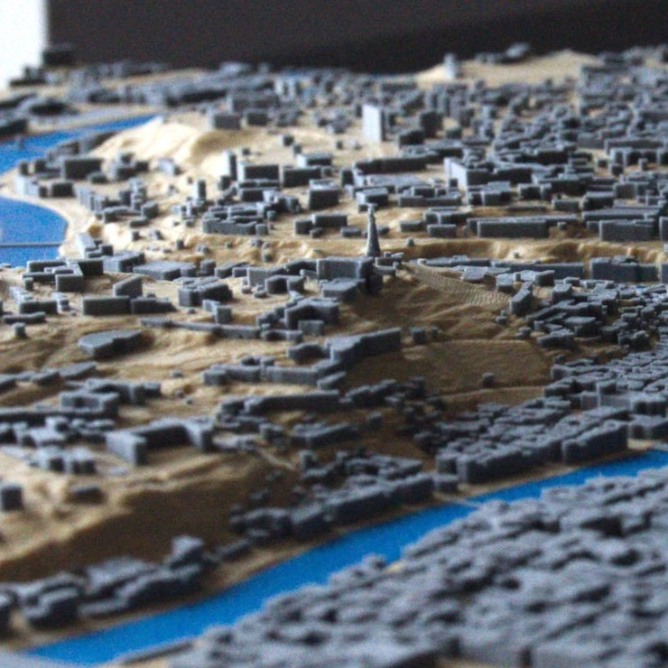

Création de cartes 3D
Passionné de cartographie, j'ai développé mon propre outil pour générer des modèles en 3D du territoire français au format STL, optimisés pour l'impression 3D et l'affichage dans les moteurs de rendu 3D.
Sommaire
Objets 3D

Villes
Montagnes
L'outil de génération
Mon algorithme, écrit en PHP, transforme les données en OpenData fournies par l'IGN pour génèrer des objets 3D.
Ces cartes peuvent être utilisées pour des projets de maquettes, de visualisation de données, d'urbanisme, ou même pour des jeux vidéo.
L'outil est conçu pour être utilisé sur une application web, en cours de construction, pour permettre à chacun de créer ses propres cartes.
Quelques impressions 3D
Voici quelques cartes que j'ai réalisées :